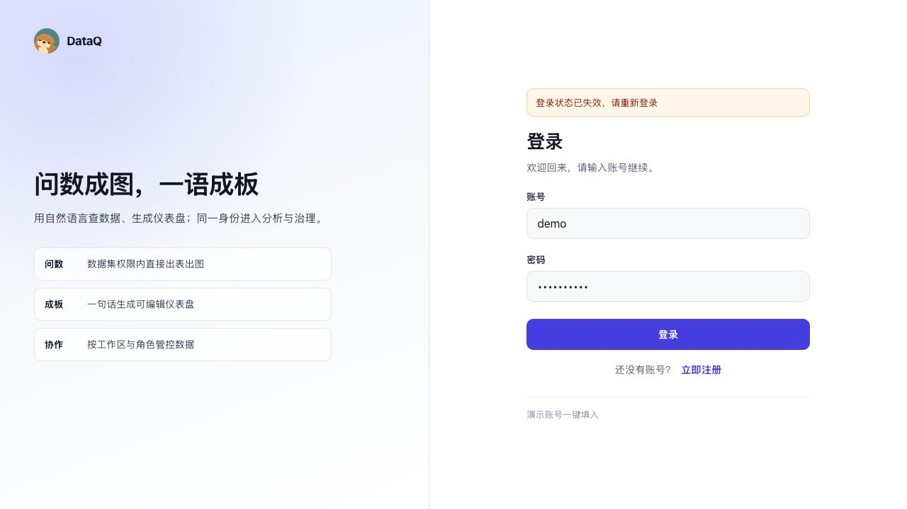
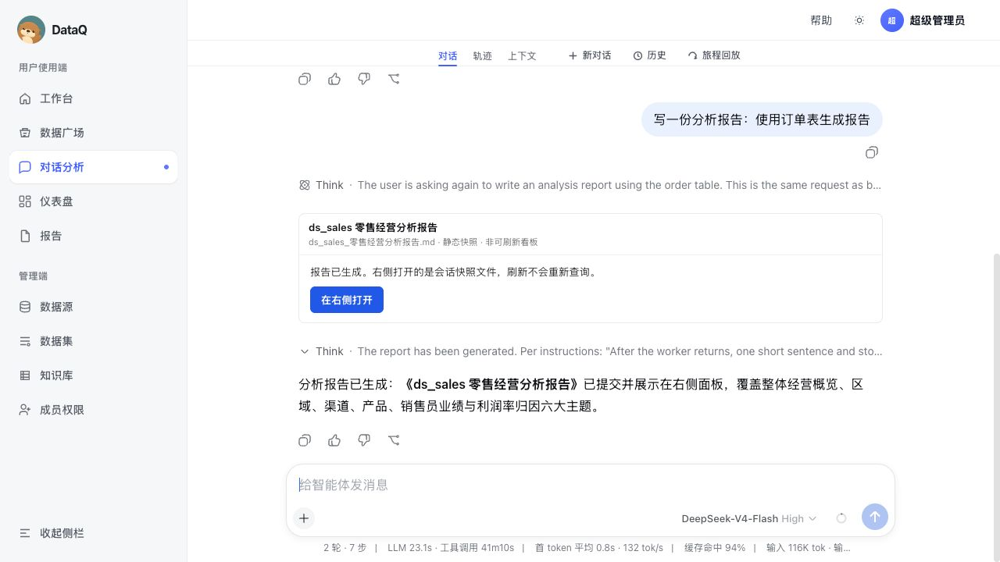
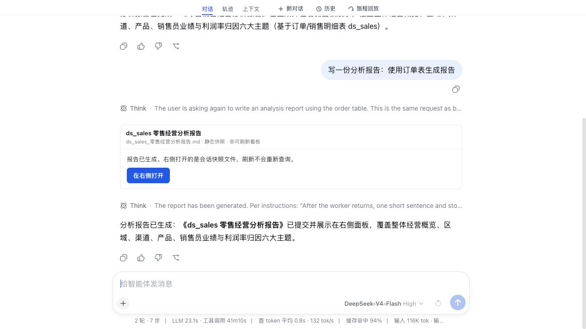
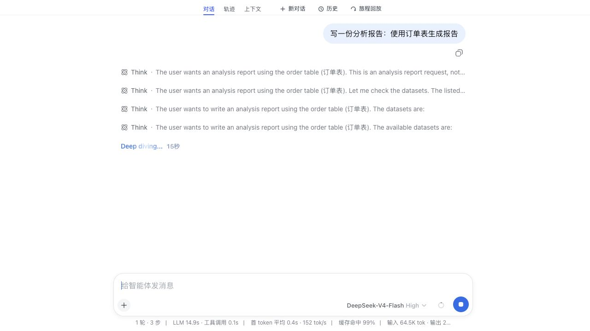
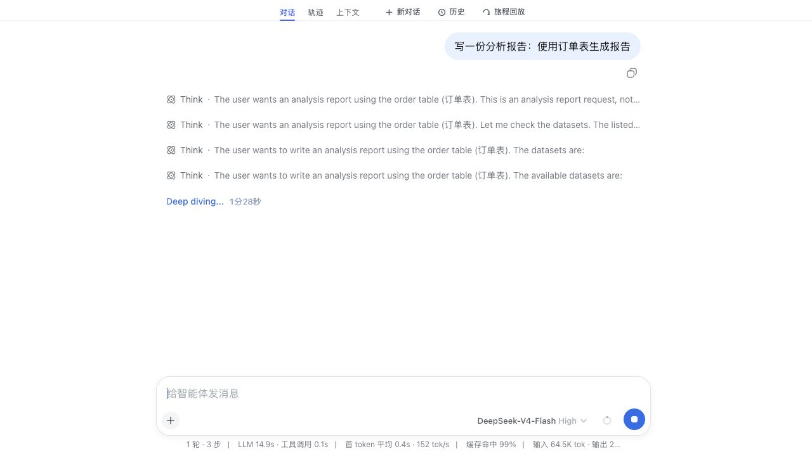
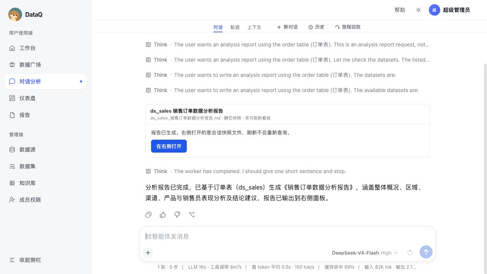

1. 复测结论
本轮端到端复测证明：报告 worker 流程可以完成 5 个子任务文件，并最终把 HTML/Markdown 写入
report-progress.files(final=true)；空数据/无显著洞察会进入 needs_action，而不是裸露 none。同时新增了两道产品级防线：订单报告数据集优先匹配 ds_012eb19e · t_pay_order；最终报告如果只讲泛化结论、没有保留分析文件中的关键数值，会被拒绝提交。
| 验收项 | 结果 | 说明 |
|---|---|---|
| 报告流程是否跑通 | 通过 | /od/report-progress 最终 status=done，文件数 7：5 个中间 MD + 最终 HTML + 最终 MD。 |
| 右侧工作区过程是否清晰 | 部分通过 | 规划、取数、洞察、子任务文件、成稿节点均进入 progress；外层 UI 的实时展示取决于 postMessage/轮询同步。 |
| 报告质量门禁 | 通过 | 新增“指标数值证据覆盖”门禁，坏报告只保留商户 ID、不保留金额/数量会被拒。 |
| 真实订单表 | 未闭环 | 当前本地环境仍实际运行在 ds_sales，不是 ds_012eb19e · t_pay_order。排序防线已写代码和单测，但真实数据目录需要接入。 |
| 刷新回放 | 已补代码，未实证 | 发现 DSH progress 为内存态，打开新/外层会话后可能变 idle；已补外层 localStorage 快照恢复，但浏览器沙箱无法直接写入模拟验证。 |
2. 本轮修复内容
| 问题 | 处理 | 文件 |
|---|---|---|
“订单表”可能走到 ds_sales 或数据源清单 | od_list_datasets 对报告请求做业务排序；订单/支付订单优先 t_pay_order / ds_012eb19e，数据源清单和 demo sales 降权。 | packages/dsh-od-bi/src/index.js |
| 报告失败/空数据没有用户动作 | 右侧诊断卡新增“放宽范围重试 / 换业务维度 / 跳过继续成稿”按钮，点击后回填左侧 composer。 | ConversationDshSurface.vue |
| 报告泛泛而谈、没有数值证据 | validateAuthoredReportQuality 新增指标数值覆盖门禁，分析文件中的关键数值必须进入最终报告。 | analysis-worker.js |
| 刷新/重登后右侧无法回看 | 外层 Vue 增加 mount-time progress 拉取和 localStorage 最近报告快照恢复。 | ConversationDshSurface.vue |
3. 自动化验证
node --test packages/dsh-od-bi/src/report-route.test.js packages/dsh-od-bi/src/report-progress.test.js packages/dsh-od-bi/src/analysis-worker.test.js packages/dsh-od-bi/src/semantic-readiness.test.js packages/dsh-od-bi/src/board-worker.test.js packages/dsh-od-bi/src/answer-meta.test.js 结果：58/58 pass pnpm eval -- --track analysis --report /tmp/od-analysis-eval-2026-09-02.json 结果：2/2 pass open-dashboard-frontend npm run build 结果：pass（仅既有 chunk size warning）
4. 端到端证据截图


ds_sales。




5. 仍需继续优化的商用项
- 真实订单表目录接入：本地 8080/8082 直接访问
/api/internal/bi/datasets返回空，实际 run 仍使用ds_sales。需要让 DSH 在同一登录/工作区上下文下稳定拿到ds_012eb19e · t_pay_order。 - 外层/DSH 会话同步：直连 DSH 和外层 iframe 对同一 run 的可见状态不一致；外层应该能主动恢复 progress，不只依赖 postMessage。
- trace 持久化：当前 progress 是进程内内存，DSH 重启或新会话会变 idle。localStorage 只能兜底单浏览器，商用仍应落会话事件表。
- 真实报告质量 golden case：必须用
t_pay_order跑出包含商户、支付状态、金额、利润、渠道/时间等真实实体的报告，再和 JoyAgent 样例做章节和证据对比。